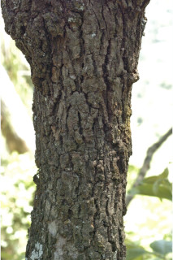
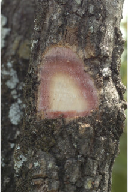
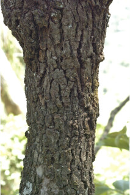
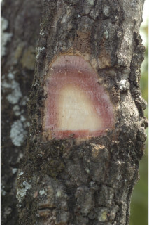

Images :
 





| Habit : | A small tree . |
| Leaves : | Leaves simple , alternate , distichous ; stipule caducous and leaving scar ; petioles up to 0.5 cm long, planoconvex in cross section, tomentose ; lamina 14.5 x 5 cm, ovate to elliptic-oblong , unequal sided, apex acute with mucronate tip, base asymmetric , margin entire , tomentose beneath; secondary_nerves 6-8 pairs, nerves hairy on both surfaces; tertiary_nerves horizontally percurrent . |
| Inflorescence / Flower : | N/A |
| Fruit and Seed : | N/A |